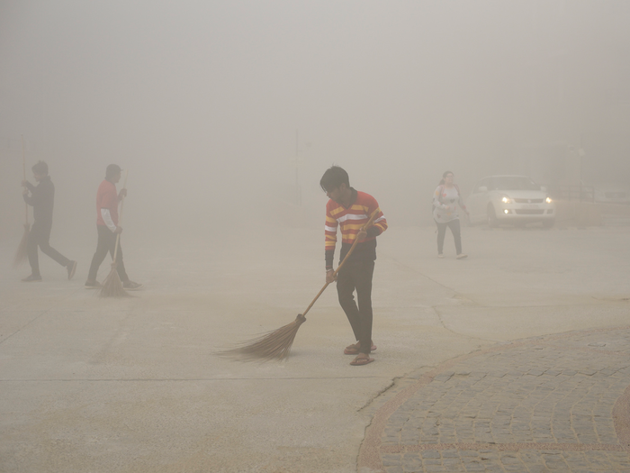

Home
About
Household Pollution
Impact on People
Solution?

What Impact Does It Have On Our Body
A series of various chemicals are released into the atmosphere when burning the fossil fuels that we consume every day. We breath air every day, and that has a direct impact towards our health, even though it merely recognized. According to WHO (worlds health organisation) intaking polluted air causes the following:
Breathing polluted air puts you at a higher risk for asthma and other respiratory diseases.
When exposed to ground ozone for 6 to 7 hours, scientific evidence show that healthy people’s lung function decreased and they suffered from respiratory inflammation.
Air pollutants are mostly carcinogens and living in a polluted area can put people at risk of Cancer.
Coughing and wheezing are common symptoms observed on city folks.
Damages the immune system, endocrine and reproductive systems.
High levels of particle pollution have been associated with higher incidents of heart problems.
The burning of fossil fuels and the release of carbon dioxide in the atmosphere are causing the Earth to become warmer.
The toxic chemicals released into the air settle into plants and water sources. Animals eat the contaminated plants and drink the water. The poison then travels up the food chain – to us.